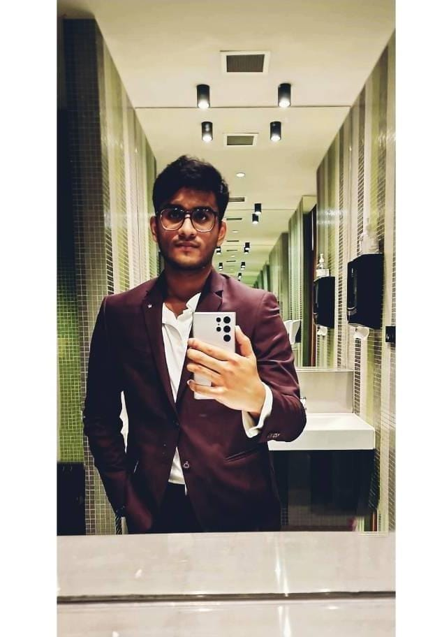
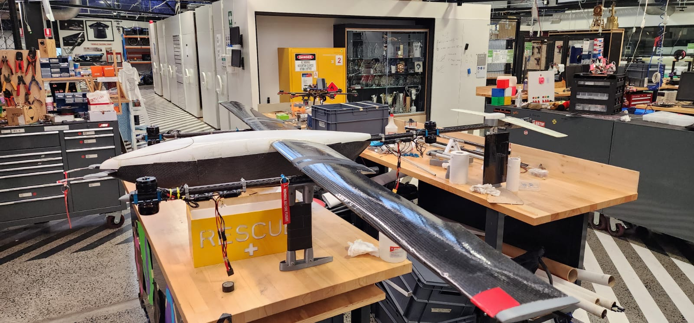

Intro

I am Aritro Dutta, a dedicated and aspiring software engineer currently pursuing Bachelor of Software Engineering (Hons) at Monash University, Australia. I am passionate about starting my career with an organization that creates meaningful impacts on individual lives and communities. With a strong foundation in both theoretical and practical aspects of software engineering, I bring a wealth of experience in team collaboration, project management, and innovative problem-solving.
Throughout my academic journey, I have undertaken numerous projects that have honed my skills in software development, from designing responsive web pages to developing sophisticated applications and integrating advanced technologies like augmented reality and machine learning. Notably, my involvement in the Monash Uncrewed Aerial Systems (MUAS) team has equipped me with hands-on experience in avionics and UAV software development. Check out my works too!
I am also actively engaged in initiatives aimed at enhancing career guidance for students, leveraging AI and natural language processing to create interactive platforms. My commitment to continuous learning and my ability to adapt to new challenges make me a valuable asset to any forward-thinking organization.
View Resume
Work

OCT 2022
ANZ Cyber Security Management Virtual Experience Program
- Learned cybersecurity concepts: phishing, network sniffing with Wireshark
- Proficient in Social Engineering Investigation
- Experienced in Digital Investigation using Wireshark
Tools: Wireshark, Windows 11
View Certificate
DEC 2021 - FEB 2022
Web Page Development (India)
- Developed a responsive web page for a leather goods company
- Optimized for PCs, tablets, and mobiles
Tools: HTML, CSS, Canva, Sublime IDE, Windows 11
Webpage Link
APR 2022 - FEB 2024
Avionics Team Member, Monash Uncrewed Aerial Systems (MUAS)
- Developed software and managed electronic components for UAVs
- Worked on RTK GPS, wiring, and testing connections
- Developed aerial acrobatics coding with Lua scripting
Tools: Mission Planner, VS Code, Lua
SEP 2021 - OCT 2021
Arcade Game using Java (Dark Souls 2D)
- Developed a text-based roguelike game inspired by Dark Souls III
- Created UML diagrams, documented design, and managed versions using Git
Tools: LucidCharts, IDE, Git
MAR 2023 - JUN 2023
9 Men's Morris Game Client Application using Java
- Developed a 9 Men's Morris game client following proper software practices
- Implemented a fully playable game for two players
MAR 2023 - NOV 2023
LukAr - Smart Glasses
- Developed a UI for Nreal AR glasses for shopping assistance
- Utilized pre-trained models and created datasets with Roboflow
- Enhanced shopping efficiency and user experience
MAR 2024 - OCT 2024
Universal Book
- Developed a collaborative digital platform for knowledge sharing using React
- Contributed to the development of chapter-based book browsing, author groups, and a collaborative editing environment
- Helped navigate scope changes and prioritized backend tasks to ensure core functionality was delivered on time
Tools: React, Git, Supabase (DB)
MAR 2024 - OCT 2024
AI Pathways: Navigating Future Careers
- Developed an interactive platform to guide students in career exploration based on personality assessments
- Integrated an AI-powered chatbot using Azure AI and managed real-time personality data with MongoDB
- Provided personalized career recommendations with curated content from YouTube, Spotify, and Udemy
Tools: Azure AI, MongoDB, Git, Python
Certification:
100 Days of Code: The Complete Python Pro Bootcamp
- Mastered Python programming by completing 100 unique projects over 100 days.
- Gained expertise in automation, game development, app and web development, data science, and machine learning using Python.
- Achieved professional-level proficiency in Python programming.
- Learned and utilized key libraries and frameworks: Selenium, Beautiful Soup, Request, Flask, Pandas, NumPy, Scikit Learn, Plotly, and Matplotlib.
- Created a portfolio of 100 Python projects to showcase skills for developer job applications.
- Developed fully-fledged websites and web apps with Python.
- Applied Python for data science and machine learning projects.
- Built interactive games such as Blackjack, Pong, and Snake using Python.
- Designed and implemented GUIs and desktop applications with Python.
View Certificate